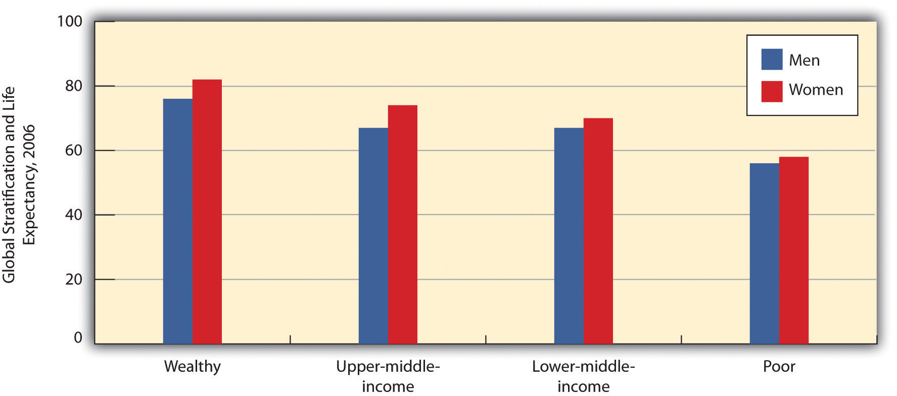
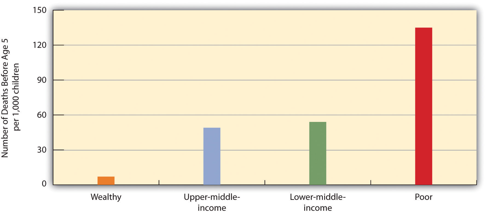
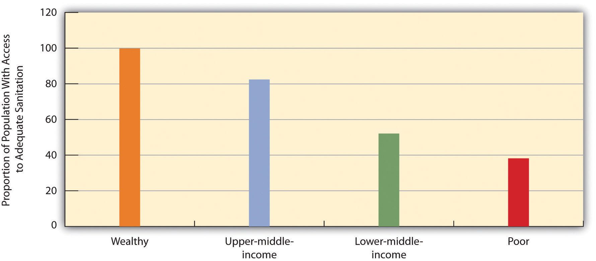
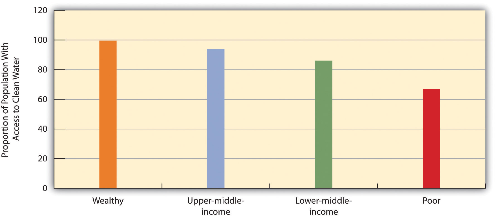
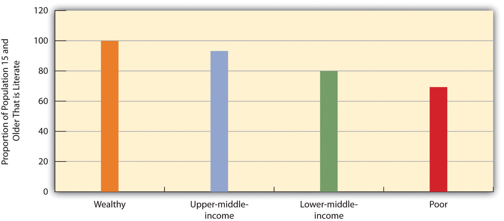
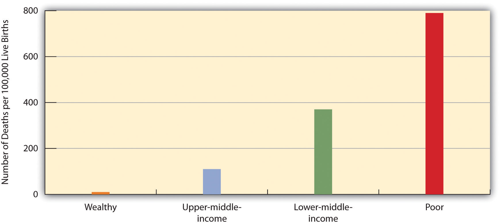
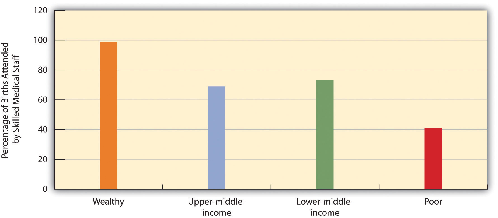

Behind all the numbers for poverty and inequality presented in the preceding pages are the lives of more than 1.4 billion desperately poor people across the world who live in some of the worst conditions possible. AIDS, malaria, starvation, and other deadly diseases are common. Many children die before reaching adolescence, and many adults die before reaching what in the richest nations would be considered middle age. Many people in the poorest nations are illiterate, and a college education remains as foreign to them as their way of life would be to us. Occasionally, we see the world’s poor in TV news reports or in film documentaries before they fade quickly from our minds. Meanwhile, millions of people on our planet die every year because they do not have enough to eat, because they lack access to clean water or adequate sanitation, or because they lack access to medicine that is found in every CVS, Rite Aid, and Walgreens in the United States.
As noted earlier, the United Nations Development Programme, the World Bank, and other international agencies issue annual reports on human development indicators that show the impact of living in a poor nation. This section begins with a look at some of the most important of these indicators.
The status of a nation’s health is commonly considered perhaps the most important indicator of human development. When we look around the world, we see that global poverty is literally a matter of life and death. The clearest evidence of this fact comes from data on life expectancyThe average number of years that a nation’s citizens can be expected to live., the average number of years that a nation’s citizens can be expected to live. Life expectancy certainly differs within each nation, with some people dying younger and others dying older, but poverty and related conditions affect a nation’s overall life expectancy to a startling degree.
A map of global life expectancy appears in Figure 9.7 "Average Life Expectancy Across the Globe (Years)". Life expectancy is highest in North America, Western Europe, and certain other regions of the world and lowest in Africa and South Asia, where life expectancy in many nations is some 30 years shorter than in other regions. Another way of visualizing the relationship between global poverty and life expectancy appears in Figure 9.8 "Global Stratification and Life Expectancy, 2006", which depicts average life expectancy for wealthy nations, upper-middle-income nations, lower-middle-income nations, and poor nations. Men in wealthy nations can expect to live 76 years on average, compared to only 56 in poor nations; women in wealthy nations can expect to live 82 years, compared to only 58 in poor nations. Life expectancy in poor nations is thus 20 and 24 years lower, respectively, for the two sexes.
Figure 9.7 Average Life Expectancy Across the Globe (Years)

Source: Adapted from Global Education Project. (2004). Human conditions: World life expectancy map. Retrieved from http://www.theglobaleducationproject.org/earth/human-conditions.php.
Figure 9.8 Global Stratification and Life Expectancy, 2006
Source: Data from World Bank. (2009). World development report 2009. Washington, DC: Author.
A key contributor to life expectancy and also a significant indicator of human development in its own right is child mortalityThe number of children who die before age 5 per 1,000 children., the number of children who die before age 5 per 1,000 children. As Figure 9.9 "Global Stratification and Child Mortality, 2006" shows, the rate of child mortality in poor nations is 135 per 1,000 children, meaning that 13.5% of all children in these nations die before age 5. In a few African nations, child mortality exceeds 200 per 1,000. In contrast, the rate in wealthy nations is only 7 per 1,000. Children in poor nations are thus about 19 times (13.5 ÷ 0.7) more likely to die before age 5 than children in wealthy nations.
Figure 9.9 Global Stratification and Child Mortality, 2006
Source: Data from World Bank. (2009). World development report 2009. Washington, DC: Author.
Two other important indicators of a nation’s health are access to adequate sanitation (disposal of human waste) and access to clean water. When people lack adequate sanitation and clean water, they are at much greater risk from life-threatening diarrhea, from serious infectious diseases such as cholera and typhoid, and from parasitic diseases such as schistosomiasis (World Health Organization, 2010).World Health Organization. (2010). Children’s environmental health. Retrieved from http://www.who.int/ceh/risks/cehwater2/en/index.html About 2.4 billion people around the world, almost all of them in poor and middle-income nations, do not have adequate sanitation, and more than 2 million, most of them children, die annually from diarrhea. More than 40 million people worldwide, almost all of them again in poor and middle-income nations, suffer from a parasitic infection caused by flatworms.
As Figure 9.10 "Global Stratification and Access to Adequate Sanitation, 2006" and Figure 9.11 "Global Stratification and Access to Clean Water, 2006" show, access to adequate sanitation and clean water is strongly related to national wealth. Poor nations are much less likely than wealthier nations to have adequate access to both sanitation and clean water. Adequate sanitation is virtually universal in wealthy nations but is available to only 38% of people in poor nations. Clean water is also nearly universal in wealthy nations but is available to only 67% of people in poor nations.
Figure 9.10 Global Stratification and Access to Adequate Sanitation, 2006
Source: Data from World Bank. (2010). Health nutrition and population statistics. Retrieved from http://databank.worldbank.org/ddp/home.do?Step=2&id=4.
Figure 9.11 Global Stratification and Access to Clean Water, 2006
Source: Data from World Bank. (2010). Health nutrition and population statistics. Retrieved from http://databank.worldbank.org/ddp/home.do?Step=2&id=4.
About one-fifth of the population of poor nations, some 800 million individuals altogether, are malnourished.
Photo courtesy of Dr. Lyle Conrad at the Centers for Disease Control and Prevention, ID# 6874 from http://phil.cdc.gov/phil/.
Another health indicator is malnutritionThe status of being inadequately nourished, arising from a lack of good food combined with infections and diseases such as diarrhea that sap the body of essential nutrients.. This problem is caused by a lack of good food combined with infections and diseases such as diarrhea that sap the body of essential nutrients. About one-fifth of the population of poor nations, or about 800 million individuals, are malnourished; looking just at children, in developing nations more than one-fourth of children under age 5, or about 150 million altogether, are underweight. Half of all these children live in only three nations: Bangladesh, India, and Pakistan; almost half the children in these and other South Asian nations are underweight. Children who are malnourished are at much greater risk for fat and muscle loss, brain damage, blindness, and death; perhaps you have seen video footage of children in Africa or South Asia who are so starved that they look like skeletons. Not surprisingly, child malnutrition contributes heavily to the extremely high rates of child mortality that we just examined and is estimated to be responsible for more than 5 million deaths of children annually (UNICEF, 2006; World Health Organization, 2010).UNICEF. (2006). Progress for children: A report card on nutrition. New York, NY: Author; World Health Organization. (2010). Children’s environmental health. Retrieved from http://www.who.int/ceh/risks/cehwater2/en/index.html The “Sociology Making a Difference” box further discusses the issue of world hunger.
World Hunger and the Scarcity Fallacy
A popular belief is that world hunger exists because there is too little food to feed too many people in poor nations in Africa, Asia, and elsewhere. Sociologists Stephen J. Scanlan, J. Craig Jenkins, and Lindsey Peterson (2010)Scanlan, S. J., Jenkins, J. C., & Peterson, L. (2010). The scarcity fallacy. Contexts, 9(1), 34–39. call this belief the “scarcity fallacy.” According to these authors, “The conventional wisdom is that world hunger exists primarily because of natural disasters, population pressure, and shortfalls in food production” (p. 35). However, this conventional wisdom is mistaken, as world hunger stems not from a shortage of food but from the inability to deliver what is actually a sufficient amount of food to the world’s poor. As Scanlan and colleagues note,
A good deal of thinking and research in sociology suggests that world hunger has less to do with the shortage of food than with a shortage of affordable or accessible food. Sociologists have found that social inequalities, distribution systems, and other economic and political factors create barriers to food access. (p. 35)
This sociological view has important implications for how the world should try to reduce global hunger, say these authors. International organizations such as the World Bank and several United Nations agencies have long believed that hunger is due to food scarcity, and this belief underlies the typical approaches to reducing world hunger that focus on increasing food supplies with new technologies and developing more efficient methods of delivering food. But if food scarcity is not a problem, then other approaches are necessary.
Scanlan and colleagues argue that food scarcity is, in fact, not the problem that international agencies and most people believe it to be:
The bigger problem with emphasizing food supply as the problem, however, is that scarcity is largely a myth. On a per capita basis, food is more plentiful today than any other time in human history.…[E]ven in times of localized production shortfalls or regional famines there has long been a global food surplus. (p. 35)
If the problem is not a lack of food, then what is the problem? Scanlan and colleagues argue that the real problem is a lack of access to food and a lack of equitable distribution of food: “Rather than food scarcity, then, we should focus our attention on the persistent inequalities that often accompany the growth in food supply” (p. 36).
What are these inequalities? Recognizing that hunger is especially concentrated in the poorest nations, the authors note that these nations lack the funds to import the abundant food that does exist. These nations’ poverty, then, is one inequality that leads to world hunger, but gender and ethnic inequalities are also responsible. For example, women around the world are more likely than men to suffer from hunger, and hunger is more common in nations with greater rates of gender inequality (as measured by gender differences in education and income, among other criteria). Hunger is also more common among ethnic minorities not only in poor nations but also in wealthier nations. In findings from their own research, these sociologists add, hunger lessens when nations democratize, when political rights are protected, and when gender and ethnic inequality is reduced.
If inequality underlies world hunger, they add, then efforts to reduce world hunger will succeed only to the extent that they recognize the importance of inequality in this regard: “To get at inequality, policy must give attention to democratic governance and human rights, fixing the politics of food aid, and tending to the challenges posed by the global economy” (p. 38). For this to happen, they say, food must be upheld as a “fundamental human right.” More generally, world hunger cannot be effectively reduced unless and until ethnic and gender inequality is reduced. Scanlan and colleagues conclude,
The challenge, in short, is to create a more equitable and just society in which food access is ensured for all. Food scarcity matters. However, it is rooted in social conditions and institutional dynamics that must be the focus of any policy innovations that might make a real difference. (p. 39)
In calling attention to the myth of food scarcity and the inequalities that contribute to world hunger, Scanlan and colleagues point to better strategies for addressing this significant international problem. Once again, sociology is making a difference.
Moving from the area of health, a final indicator of human development is adult literacyPercentage of people 15 and older who can read and write a simple sentence., the percentage of people 15 and older who can read and write a simple sentence. Once again we see that people in poor and middle-income nations are far worse off (see Figure 9.12 "Global Stratification and Adult Literacy, 2008"). In poor nations, only about 69% of adults 15 and older can read and write a simple sentence. The high rate of illiteracy in poor nations not only reflects their poverty but also contributes to it, as people who cannot read and write are obviously at a huge disadvantage in the labor market.
Figure 9.12 Global Stratification and Adult Literacy, 2008
Source: Data from World Bank. (2010). Health nutrition and population statistics. Retrieved from http://databank.worldbank.org/ddp/home.do?Step=2&id=4.
Before we leave the issue of human development, it is instructive to compare the United States, an extremely wealthy nation, with one poor nation from Africa, Uganda, on some economic and human development indicators as presented in Table 9.1 "The United States and Uganda". As will be obvious, Americans and Ugandans live very different lives, notwithstanding the high degree of poverty found in the United States compared to other wealthy nations. The typical American lives a comfortable life that the typical Ugandan can only dream of, while the typical Ugandan lives a life that the typical American would find only in her or his worst nightmare.
Table 9.1 The United States and Uganda
| United States | Uganda | |
|---|---|---|
| Gross national income per capita ($) | 46,970 | 1,140 |
| Population living below $2 per day (%) | — | 76 |
| Infant mortality rate (number of infant deaths per 1,000 live births) | 6.6 | 76 |
| Life expectancy at birth (years) | 78 | 50 |
| Lifetime births per woman | 2.1 | 6.7 |
| Underweight children, ages < 5 (%) | 1 | 20 |
| Motor vehicles per 1,000 population | 787 | 6 |
Source: Population Reference Bureau. (2009). 2009 world population data sheet. Washington, DC: Author.
In discussing stratification in the United States, Chapter 8 "Social Stratification" emphasized that women are disproportionately likely to live in poverty and concluded that poverty “thus has a female face.” What is true in the United States is also true around the world, only more so. Although, as we have seen, more than 1.4 billion people on earth are desperately poor, their ranks include more than their fair share of women, who are estimated to make up 70% of the world’s poor.
Because women tend to be poorer than men worldwide, they are more likely than men to experience all the problems that poverty causes, including malnutrition and disease. But they also suffer additional problems. Some of these problems derive from women’s physiological role of childbearing, and some arise from how they are treated simply because they are women.
Let’s first look at childbearing. One of the most depressing examples of how global poverty affects women is maternal mortalityThe number of women who die during childbirth for every 100,000 live births., or the number of women who die during childbirth for every 100,000 live births. More than 500,000 women die worldwide from complications during pregnancy or childbirth. Maternal mortality usually results from one or more of the following: inadequate prenatal nutrition, disease and illness, and inferior obstetrical care, all of which are much more common in poor nations than in wealthy nations. Figure 9.13 "Global Stratification and Maternal Mortality, 2005" shows the difference that national poverty makes for maternal mortality. In wealthy nations, the rate of maternal mortality is a minuscule 10 per 100,000 births, but in poor nations the rate is a distressingly high 790 per 100,000 births, equivalent to almost 1 death for every 100 births. Women in poor nations are thus 79 times more likely than those in wealthy nations to die from complications during pregnancy or childbirth. Figure 9.14 "Global Stratification and Medically Assisted Births, 2000–2007" suggests a reason for this difference, as it shows that births in poor nations are less than half as likely as those in wealthy nations to be attended by skilled medical staff.
Figure 9.13 Global Stratification and Maternal Mortality, 2005
Source: Data from World Bank. (2010). Health nutrition and population statistics. Retrieved from http://databank.worldbank.org/ddp/home.do?Step=2&id=4.
Figure 9.14 Global Stratification and Medically Assisted Births, 2000–2007
Source: Data from World Bank. (2010). Health nutrition and population statistics. Retrieved from http://databank.worldbank.org/ddp/home.do?Step=2&id=4.
In addition to these problems, women in poor nations fare worse than men in other ways because of how they are treated as women. One manifestation of this fact is the violence they experience. About one-third of women worldwide have been raped or beaten, and Amnesty International (2004)Amnesty International. (2004). It’s in our hands: Stop violence against women. Summary. London, England: Author. calls violence against women “the greatest human rights scandal of our times.” Although violence against women certainly occurs in wealthy nations, it is more common and extreme in poor and middle-income nations. More than half of women in Uganda, for example, have been physically or sexually abused (Amnesty International, 2010).Amnesty International. (2010). “I can’t afford justice”: Violence against women in Uganda continues unpunished and unchecked. London, England: Author. In India and Pakistan, thousands of women are killed every year in dowry deathsThe murder of a new wife by her husband and/or his relatives because she has not paid the groom money or goods., in which a new wife is murdered by her husband and/or his relatives if she does not pay the groom money or goods (Kethineni & Srinivasan, 2009).Kethineni, S., & Srinivasan, M. (2009). Police handling of domestic violence cases in Tamil Nadu, India. Journal of Contemporary Criminal Justice, 25, 202–213.
In India and Pakistan, thousands of new wives every year are murdered in dowry deaths because they have not provided their husbands a suitable amount of money and goods.
Source: Photo courtesy of Claude Renault, http://commons.wikimedia.org/wiki/File:Women_moving_soil_with_bowls.jpg.
Beyond violence, women in poor nations are less likely than their male counterparts to get a higher education, and girls are less likely than boys to attend primary school. Women are also less likely than men to work in jobs that pay a decent wage and to hold political office. In many poor nations, girls are less likely than boys to receive adequate medical care when they become ill and are more likely than boys to die before age 5. In all these ways, women and girls in poor nations especially suffer.
The United Nations Development Programme (UNDP) uses a gender empowerment measure (GEM) to determine the status of women compared to men in about half the nations across the world. This measure is based on such things as the percentage of national legislative seats and professional and technical jobs held by women and the ratio of female-to-male earned income. In the UNDP’s 2009 Human Development Report, the nations with the five highest GEM rankings were Sweden, Norway, Finland, Denmark, and the Netherlands (the United States ranked only 18th), all very wealthy nations; the nations with the five lowest GEM rankings were Yemen, Bangladesh, Egypt, Saudi Arabia, and Algeria.
All these latter nations are very poor with the exception of Saudi Arabia, which is fairly wealthy. Still, women in Saudi Arabia are not allowed to drive a car or to vote. Each woman must have a male relative who acts as her legal guardian; a woman cannot work outside the home or travel outside the country without her guardian’s permission. The two sexes are segregated in public: women have women-only stores to shop in and women-only lines in fast-food restaurants to stand in. Law enforcement agents watch carefully to make sure that the sexes do not interact in public (Zoepf, 2010).Zoepf, K. (2010, June 12). Fighting for the right to have limited rights. The New York Times, p. A7.
Two sets of international statistics cited by writers Nicholas D. Kristof and Sheryl WuDunn (2009)Kristof, N. D., & WuDunn, S. (2009, August 23). The women’s crusade. The New York Times, p. MM28. are especially troubling. Because women outlive men, ordinarily there should be more females than males in a country. Yet China has 107 males for every 100 females, and India has 108 males for every 100 females. In these nations, girls and women have died at far greater numbers than men because of abuse, murder, and lack of health care, only because they are female. It is estimated that the number of “missing women” in the world today because of these problems is between 60 million and 107 million.
A second set of statistics concerns sexual slavery. As Kristof and WuDunn (2009, p. MM28)Kristof, N. D., & WuDunn, S. (2009, August 23). The women’s crusade. The New York Times, p. MM28. summarize this problem,
In the developing world,…millions of women and girls are actually enslaved. While a precise number is hard to pin down, the International Labor Organization, a U.N. agency, estimates that at any one time there are 12.3 million people engaged in forced labor of all kinds, including sexual servitude. In Asia alone about one million children working in the sex trade are held in conditions indistinguishable from slavery, according to a U.N. report. Girls and women are locked in brothels and beaten if they resist, fed just enough to be kept alive and often sedated with drugs—to pacify them and often to cultivate addiction.
This situation is so horrid that Kristof and WuDunn (2009, p. MM28)Kristof, N. D., & WuDunn, S. (2009, August 23). The women’s crusade. The New York Times, p. MM28. call for a moral crusade to save women’s lives. “In the 19th century,” they write, “the paramount moral challenge was slavery. In the 20th century, it was totalitarianism. In this century, it is the brutality inflicted on so many women and girls around the globe: sex trafficking, acid attacks, bride burnings and mass rape.” They add that an important reason for global poverty is that women in poor nations are uneducated, victimized by violence, and generally oppressed. For this reason, they say, international organizations are increasingly recognizing that “focusing on women and girls is the most effective way to fight global poverty.”
Because of their size, immaturity, and lack of resources, children are considered the weakest members of any society. When we look around world, we see that this fact of life is also true of the global society. In poor nations, children especially suffer. We have already seen evidence of this suffering in this chapter’s earlier discussion of childhood disease, malnutrition, and mortality.
International agencies estimate that 8.8 million children under age 5 died in 2008 across the world, or an average of about 24,000 child deaths every day (You, Wardlaw, Salama, & Jones, 2010).You, D., Wardlaw, T., Salama, P., & Jones, G. (2010). Levels and trends in under-5 mortality, 1990–2008. Lancet, 375(9709), 100–103. In sub-Saharan Africa, 1 of every 7 children dies before age 5; in South Asia, 1 of every 13 children dies before age 5. Three-fourths of all child deaths occur in only 18 countries, and half of all child deaths occur in only 5 countries: China, the Democratic Republic of the Congo, India, Nigeria, and Pakistan. Diarrhea and pneumonia cause many of the child deaths, of which about 40% occur during the first month of life. The conditions discussed earlier, including inadequate sanitation and lack of access to clean water, account for the bulk of fatal disease that children suffer.
If almost 9 million children under age 5 die annually, other numbers also tell an unsettling tale (UNICEF, 2009):UNICEF. (2009). The state of the world’s children: Special edition. New York, NY: Author.
As disturbing as these statistics might be, there is also good news, as much progress has been made during the past few decades in helping the world’s children, thanks to agencies such as UNICEF. For example, child mortality worldwide declined from 142 per 1,000 live births in 1970 to 65 per 1,000 in 2008; the rate in Africa declined from 231 to 132. Reflecting this decline, the number of child deaths dropped from 16.7 million in 1970 to 8.8 million in 2008. International efforts have saved millions of children’s lives during the past four decades.
Before we leave the issue of children’s welfare, it is worth noting one additional problem they face in certain parts of the world. In some developing countries, children are taken by force to join the armed forces or armed groups, or they join out of economic necessity or to escape abuse. These “child soldiers” may bear arms and engage in combat, serve as cooks and messengers, or be sexual slaves. Approximately 300,000 children (under age 18) worldwide are thought to be child soldiers. Beyond the dangers of being involved in arm conflict, these children are not in school and are often sexually abused. Since the 1980s, UNICEF and other international agencies have worked for the release of child soldiers in many nations, including Angola, Burundi, the Democratic Republic of the Congo, Rwanda, Somalia, and Uganda.